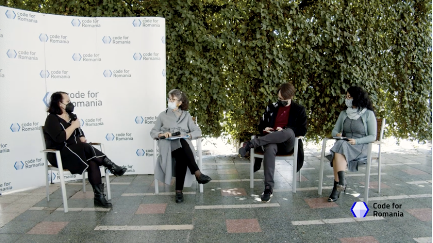
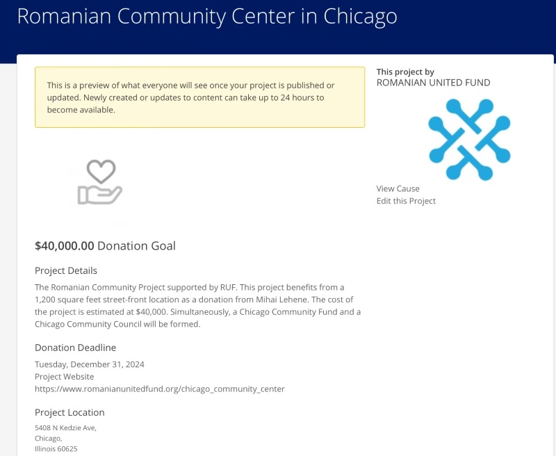

One liner: 1000+ volunteer technologists donate their time to write code for social good
Contacts:
Connected to:
See also:
Wire Transfer Info USD Account (verified 5/11/22)
Name on the account: ASOCIAȚIA CODE FOR ROMANIA
Address: Piața Alba Iulia nr. 7, bloc I6, etaj 1, ap. 6, sect. 3, București
CUI: 36317167
USD Account: RO89BTRLUSDCRT0348260401
Banca Transilvania Sucursala Unirii
Swift: BTRLRO22
Founded in 2016 during a turning point in civic engagement in Romania after Colectiv, Code for Romania is a . Strategic areas are Information and Access to Public Data, Culture Education and Promotion, Civic Involvement and Collaboration, Facilitating Access to Public Services. Through this platform, 1000+ volunteers, IT developers, designers, social scientists and communication specialists have so far donated 60 000 pro bono hours to help develop the necessary civic technology infrastructure for Romania
Dragă Miha,
Pe 12 noiembrie, în urmă cu doar două zile, Code for Romania (sub umbrela Commit Global, ramura internațională a organizației noastre) a participat la Paris Peace Forum 2022, organizat de președinția franceză, care a reunit în capitala Franței zeci de șefi de stat, sute de reprezentanți guvernamentali, ai agențiilor ONU și numeroase organizații neguvernamentale din întreaga lume.
Ecosistemul integrat de sprijin pentru refugiați, pe care l-am construit cu sprijinul vostru, a fost unul dintre cele 10 proiecte premiate ca proiectele anului la nivel global, selectat din peste 60 de inițiative finaliste din întreaga lume.
Ne bucurăm că putem sărbători această recunoaștere a muncii și a impactului pe care l-am avut și continuăm să îl avem împreună cu voi, cei care ne-ați fost alături și ne-ați sprijinit să ajutăm peste 1.2 milioane de refugiați ucraineni până acum.
Ne dorim să vă avem ca parteneri și în continuare. Din nefericire, războiul este departe de a se fi terminat, numărul de utilizatori ai ecosistemului este în creștere de la zi la zi și contăm pe sprijinul vostru și în anul următor pentru a putea duce această muncă mai departe.
Vă mulțumim,
Oana & The Team
Bogdan Ivanel, Marius Constantin, Mihaela Livanu, Mihai Lehene, Oana Despan (fundraiser)
170 produse proiectate
36 adoptate
70 in lucru
Primaria Sinaia- proiect pilot tehnologie in administratia locala
Launch of research ‘Care“/Diaspora mai aproape de acasa- Civic Labs
Partners: RUF, Civic Labs ING & Lidl
https://www.youtube.com/watch?v=I2dXlKB_hxk
https://www.facebook.com/code4romania/videos/290020552730918/
https://www.facebook.com/1085208331499749/posts/4074225195931366/
“Mai sunt și toate detaliile de proiectare a celor 11 soluții - in raport sunt prezentate succint cat pentru publicul larg, dar în spate sunt toate detaliile de arhitectură și documentația. Speram că împreună și cu voi și cu autoritățile să le și transformam in realitate pe fiecare dintre ele. Când lucrurile se mai așează la noi cu toate lansările și trec sărbătorile poate organizam un call sa trecem prin cele 11.“

Dana Diminescu- France (app for diaspora)
Alina Balatski- England; MyRo- app
BENEVITY Presentation of a Project

Dragă Mihai, dragă Mihaela,
Venim către voi cu o veste care sperăm să vă bucure - zilele acestea, am lansat campania Digitalizăm România Împreună.
Am concentrat tot ce era mai important într-un mod ușor de parcurs pe www.code4.ro/putem unde am urcat harta interactivă, ne-am mândrit cu partenerii noștri și am detaliat procesele din cadrul programului Civic Labs care acum este încorporat în umbrela de comunicare Digitalizăm România Împreună.
În attach, puteți găsi și documente auxiliare care completează la nivel de informație întregul demers al Code for Romania pentru a oferi un overview cât mai concret și relevant - e vorba despre comunicatul de presă lansat în media, manifestul campaniei și varianta detaliată a planului nostru enunțat pe site.
Ne-ar plăcea tare mult să le parcurgeți și voi în măsura în care timpul vă permite, cu mențiunea că, pentru orice detaliu suplimentar, noi suntem la un mail sau telefon distanță.
Vă mulțumim tare mult pentru susținerea de până acum și sperăm să avem ocazia de a construi împreună multe segmente de „autostradă” digitală, în oricare dintre cele 5 direcții.
Pe curând,
Oana și Echipa Code for Romania
Participants:
If people want to contact them, they will have access to some macro information
Very high request: they need to control to whom they talk to, and when. RFP: “request for participation”
Snowball start: start with a few people. Invitation based
Peer control, peer review
Standards, ethics conduct: at least one person must administer the community
Prototyping/testing → prototyping has started already
It’s very important that it’s very user friendly
Control Group → results in an MVP, add layers and modules
After testing, we will realize if we can release this in stages.
3 stages:
Participants:
Recording:
Programs for financing:
La nivel macro:
Includes: IT (programmers), communication, social sciences (data scientists, sociologists), UX
Gala societatii civile: 2 awards
We offer a viable channel:
* monitorizare vot (platforma folosita de observatorii independenti) - before we did this, the observers were using pen and paper, centralizing those took a long time
* platforma de colectare a celor 2% din profit pentru ONG-uri, peste 1100 de ONG-uri folosesc platforma noastra
Code4Romania the only channel that the diaspora can get involved, besides charitable donations and voting
The second Civic Technology platform in the world
We realized that ONGs don’t know what they need. Civic labs: we bring all stakeholders at the table, we create focus groups, we map the problems/pain points in the system. Many times we look at issues that no-one else is looking at
CivicLabs.ro
- Sanatatea Mamei si a copilului
- Teachers training
- Disaster relief training/
- Domestic Violence
- Voting and elections
- Government transparency (open legislation)
We have finished the research phase on 5 of them. Technical documentation and prototype
BrainGain would enter the program in 2020-2021
Almost monthly we have NGOs
We have Vodafone Foundation that adopted 8 project, the World Bank adopted 2 projects coming out of Civic Labs, and we have 2 ONGs that took over two of the projects. Any project in Civic Labs must be open source, so that everyone can use the solution as a non-profit.
Similar to the architect/developer. Tech4good
We have 6 projects. Hackatons in Iasi/Cluj/Timisoare si Bucuresti and we have a marathon of 10 hours that we work on these projects.
Once a month we meet online, we offer a tempo, we move things forward, we review tasks
This is the main gate to get access to volunteers, for the most people their first contact with Code4Romania is through a hackaton
We get people out of the house
After every Hackday meeting we create a summary video, we have several videos
Documentary created by National Geographic, a fellow from NG spent more than a year with us, which is now in production, we don’t know if we’re going to have anything ready by December 1st
Two things that may help: mid-November we have 2
* Olivia will be a speaker at Github Universe (13 Nov)
* we’re going to have a hackaton in San Francisco mid-November (16 Nov)
Participanti:
Subiect: Status Proiect BrainGain
-Diaspora este una din cele 6 teme la care se uita anul acesta
-Am inceput o cercetare sa mapam problememe diasporei, sa le validam, sa ne uitam la rezolvarea prin solutii tehnologice
-am mapat deasemenea actori, institutii, organizatii din Romania care fac munca pe Diapora
-proiectul Diapora Hub a insemnat si o mapare exhaustiva a organizatiilor romanilor din diapora
-am inceput interviurile in CivicLabs cu zeci de profesionisti din diapora, research de user experience, prototipul va fi testat pe ei.
-suntem si la faza de “preadoptie utilizatori”
-solutia va iesi din Civic Labs undeva la inceputul anului viitor
-scopul Brain Gain este de a aduce impreuna comunitatea de experti intr-un spatiu intr-un spatiu virtual in care sa poata sa lucreze colaborativ.
-mizeaza pe un efect de snowball in formarea comunitatilor pe domenii, o comunitate initial restransa dar care se largeste prin invitatiile lor.
-presa, mediul academic sa poata sa interogheze acest database.
-este o solutie complexa, dezvoltarea tehnica va dura 6-10 luni.
-solutia tehnica se poate face in 3 feluri:
-dupa finalizarea solutiei tehnice, platforma va avea nevoie de o persoana de administrare si de un buget de comunicare. Cautam o organizatie care sa-si asume aceasta platforma si costuld e lunga durata.
Mihai: Valoarea pentru specialistii din diaspora e cunoasterea si colaborarea domeniul lor si in acest proces ajutarea Romaniei.
Next Steps/Action Items
1.Nevoia de Buget Cercetare si Prototipare:$5000 (Code4ro va trimite bugetul detaliat, RUF va explora variante de fundraising.
2.Formarea unei Coalitii in jurul Solutiei (Parteneriat Babes-Bolyai?)